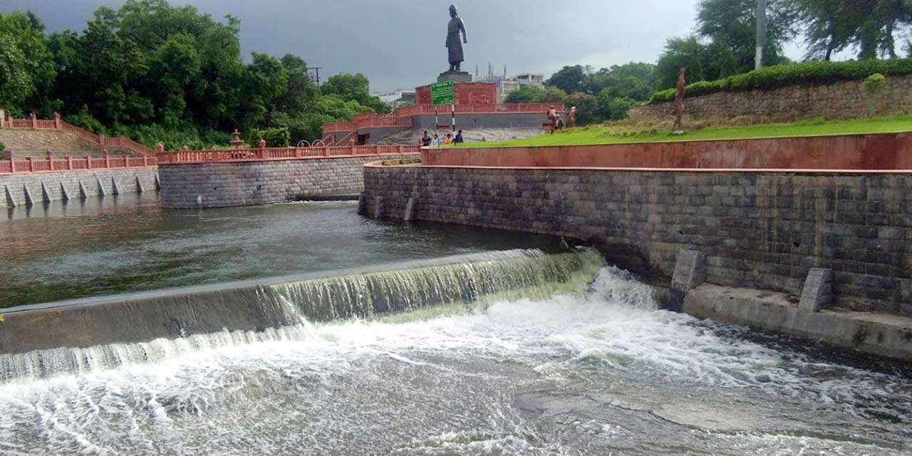

AMBAZARI LAKE AND GARDEN NAGPUR (ENTRY FEE, TIMINGS, BEST TIME TO VISIT, IMAGES & LOCATION)

Ambazari Lake is among Nagpur's 11 lakes and is one of the largest. This lake is the primary water supply
for
government officials and other influential individuals. In addition, the Nag River originates in this
lake.
The garden next to Ambazari Lake, one of the major tourist attractions of Nagpur, has been transformed into a
more
memorable destination to visit, with a musical fountain, amusement activities, and several electric rides.
Ambazari
Lake also has boating facilities and a specially planned walking route. These amenities make Ambazari Lake a
must-,
see destination and it has thus become a popular tourist destination throughout the holiday season.
The water from Ambazari Lake is distributed through clay pipes constructed in 1870 under the reign of Bhosle. It
was
built to provide water to the entire city of Nagpur. It was given the name Ambazari because mango trees flank
it.
Tourists can enjoy boating, games, and rides and visit several pubs and restaurants, one of which is the
Dwelling
bar
and Restaurants. The garden, which spans 25 acres and is next to the lake, is the icing on the cake. If you are
a
nature
enthusiast, you will not want to miss the abundance of flora and fauna found here.